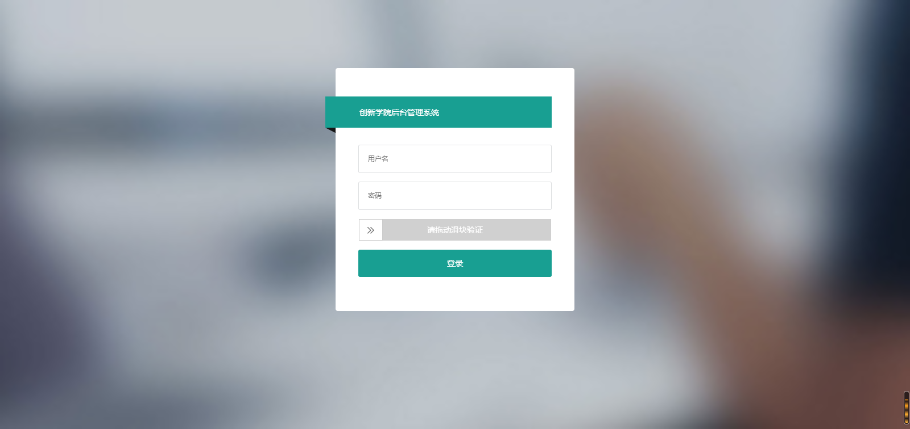

近几周，一直处在忙碌状态，一边是公司的项目，一边有一个自己的项目，都很急，上周算是把公司的项目暂时告一段落，这周，也把自己的项目交付了客户测试。
突然闲下来了，暂时也还没有新的需求或者项目提交到我这边，于是自己准备搞一个后台系统，一是以为刚做的项目尚无后台管理，二是也是借机会实战一下.net core，算是自己给自己挖个坑。
从昨天开始，搭基础框架，准备常用的工具库，全部基于.net standard，然后做一些基础的功能，包括拦截器，日志，签名验证，集成orm，到今天下午，完成了一个实际的登陆页

说了半天，好像是在炫技一样。
其实稍微有那么一点点啦，你看这个登录页挺好看的是不是。
我想说的是，其实这些东西，我在一个多月前就搞过，但是又一次搞的时候，好多东西都忘了，又折腾了半天，还把之前的项目找出来，翻了翻，有的还是复制粘贴过来的，而且，我已经写了几篇.net core的博客了，甚至有点自满的情绪，自以为一只脚已经踏进了跨平台的大门里，实际还是没迈进去。
我清楚的记得，在我写微服务那篇博客的时候，很多基础的东西，我确实都记得很清楚，也能款款而谈，但现在，却发现脑子里没东西了。
我反思了很久，总结了点东西，可能看起来有点残酷，说出来甚至可能会伤害到一些人，但我还是想聊一下我的想法。
话题：为什么学了新东西，刻不到脑子里，扭头就忘？
（这个话题看起来很蠢，好像上小学的时候就再提，我也想不出什么好的语句辞藻了，姑且这么将就下吧。）
这个问题，放到我们的工作中来，出现的原因是多方面的，主观方面的原因我就不多说了，什么兴趣啊，主观能动性啊，自觉性啊等等，老生常谈，说难听了就是扯淡！
我觉得客观因素更实在点。那客观因素是什么？说简单点，就是和你上班的地方，工作的环境，团队的工作状态有关！
可能你在一个很好的公司，有着稳定的客户，长期的项目，永远也不缺活儿，找工作的话，这也的确是一个很重要的指标。但是，对于一个处在成长期的工作人员来说，工作的内容，也是极为重要的。
以刚刚做的项目为例，这是我时隔2年，重新完整的做全栈项目，因为项目紧急，为了稳妥，团队还是决定采用传统的方式开发，忙活了一个多礼拜，团队全情投入，总算及时上线。
看着好像也没什么问题，这也是一个很正常的的开发流程。
那问题在哪儿呢？
当我全情投入去做这个项目的时候，我几乎所有处理问题的方式，都是过时的！那为什么不用流行的办法却解决？因为在我有限的认知里，流行的办法普遍都不适合过时的项目！举个不恰当的比喻就是，你不能把你的特斯拉开去大众的4S店维修保养，即便你开去了，他们也修不了，除了配件不符合，维修人员的认知和维修水平也跟不上。
再说的直白点，公司为了长期发展，会承接很多项目，但是公司需要的是结果，能快速带来收益的成果，而不是过程，过程是开发人员码出来的，你在做项目的时候，大方向如果错了，尽管也能得出的一个公司想要的结果，但这个结果对你来说并不好，因为它没有促进你的成长！
那什么是大方向错了？
如果做完一个项目，你付出了很多时间和精力，却没什么获得感和成就感，我觉得就可以说是大方向错了。
当然这也不是绝对的，毕竟你是在公司工作，工作就是要有产出的，没有结果，光想着自己成长，就显得太不专业了，抱着这种心态，肯定在哪都干不下去。
在时间紧，任务重的情况下，为了顺利完成项目，选择最稳妥的技术方案，一点问题都没有！
那问题又是什么？
问题是，什么叫最稳妥的技术方案？
稳妥的方案，往往都不是最优的方案，而我们之所以不敢选择更优的方案，大多是出自对能力的不自信。当工作了一段时间之后，接到项目，往往会自然而然的朝向自己最擅长的领域去做，久而久之，这种方式也成了整个团队的开发习惯，我们在实战项目中，积累经验，在做项目的时候，需要的时间便会越来越短，效率也越来越高，同类型的项目，可能很快就能完成上线，这也是公司想要的一个结果。
看着好像又没什么问题哈？
电影《中国机长》里有句台词，“当你觉得一切都没有错的时候，错就一定回来找你”，我们快速的输出同类型的项目，在公司的发展前期是有利的，但时间久了，容易形成惯性，造成的问题就是，当我们需要转型，或者被迫要转型的时候，可能转不过来，就好像高速行驶的汽车，开到在悬崖边上，很难刹住车一样。我们擅长做的项目，反而限制了我们的发展。
这就回到了开始的话题，工作环境，对个人的发展是很重要的。
你在的公司，可能处在一片行业蓝海里，可以自由挥洒，有稳定的客户，有长期合作的项目，有不错的收入，也可以为你提供不错的工作条件。但这可能也是噩梦的开始（说的有点夸张了哈哈，想不起别的形容词儿了），注意关键词是“可能”，不是“噩梦”！
“可能”，是因为不是绝对的，只是可能，有一个概率问题，这是前提条件！
“噩梦”，就得说道说道了，我前面铺垫了那么多，我觉得大家也看出来了，当你真在这样“不错”的工作环境里，长期处于忙碌的状态，习惯某类型项目的开发，形成了团体惯性，当公司突然决定要转型，或者突然给你一个其他类型的工作，又或者你跳槽到一家其他公司的时候，很大可能是你没办法转变！就好比一个用剑的士兵，长期进行剑术套路练习，突然让你使刀或者长枪去杀敌，或者敌人用别的套路来打你，很大概率，你会死在敌人手上！
那么为了证明自己的价值，你可能没办法去其他公司，没办法做其他类型项目，只能长期呆在一家公司，期待着你所擅长的领域不会被淘汰，或者把本不该用你擅长的方式做的项目，也用这种方式做了出来，形成了“稳妥”的“万能方案”，接下来，整个团队也适应了这种环境。
我觉得这是件很可怕的事情，因为形成这种惯性，是需要经年累月的积累的，对公司来说，这不算是坏事，因为公司只要结果，但对个人来说，这真的会限制成长，因为如果你所在的团队，没有自我升级的能力或者这种能力很弱，只是为了结果而工作，只是为了完成项目而忙碌，而忽视了行业的发展，缺少主人翁意识，没有长远的目光和眼界，那这样的团队，真的不是好的团队。
写到这，我真的很担心大家对号入座，觉得我在影射什么，其实并没有！
之所以写这么多，其实大部分是突然的心血来潮。
前天，我在家锻炼，跟女儿来了一场简短的灵魂对话，
“爸爸，你问什么要锻炼？”
“因为爸爸要减肥！”
“哦，为什么要减肥？”
“因为爸爸太胖了？”
“哦，为什么胖？”
“因为爸爸吃的太多了！”
“哦，为什么吃太多？”
“因为爸爸太馋了！”
“哦，为什么馋？”
“因为……”
女儿天真的问题，在我心里沉淀了2天，我发现，有时候，我们之所以看不到问题的所在，是我们自己把自己藏了起来，我们面对的不是真实的自己，或者说，我们不敢面对真实的自己，不能接受真实的自己。
再回到最开始的问题，我在用自己的方式做后台系统的时候，磕磕绊绊，甚至忘记了一些基础的服务注入问题。我恍然明白，其实我不是忘了，是我在一个短暂的忙碌期，熟悉了另一种做事习惯，而且本来，我对自以为掌握的知识，并没有真正掌握，只是在略知一二的层面上而已！
然后，我就停下来了，把所思所想，简单汇总了一下，表达能力有限，可能也没有把想说的内容表述清楚。
可能我前面的博客也聊过类似的问题，我的表述也显得有点激进，好像除了激化矛盾，也不能解决什么问题。而这篇，我整个写的过程很平静，因为我自己也出现了我曾说过的问题，而且我发现我自己也没有真正朝着自己向往的方向前进，不过是五十步笑百步而已，呵呵~
之前看过陈皓（网名：左耳朵耗子，大家可能都听过，没听过的可以去搜一搜他）写的一篇博客，他以一个过来人的方式指导我们这些后辈别自我设限，印象最深刻的是他引用庄子的的那段话
“
井蛙不可以语于海者，拘于虚也；//空间局限
夏虫不可以语于冰者，笃于时也；//时间局限
曲士不可以语于道者，束于教也。//认识局限
”
全文地址：https://coolshell.cn/articles/20276.html，通篇的意思就是，不要自我设限，不要封闭自己。
回到问题本身，简单讲，我觉得也没什么具体的办法，因为这可能不是你一个人的问题，而是整个团队，整个公司，甚至整个行业的问题，唯一能做的，就是保持清醒，刻意练习吧！清楚自己的不足之处，不要融入消极的团队惯性里，刻意的去加强自己不足之处的训练，刻意的在实战项目中，实现自己的想法，当然前提是不能影响项目的结果，这是绝对的前提！
当跑的太快的时候，别忘了偶尔要停下来看清方向。
练不到十八班武器样样精通，也要练成独孤九剑，让自己能够独当一面，有拿得出手的硬核实力！共勉！
呼~，差不多就这样吧，韶华易逝，继续努力吧。